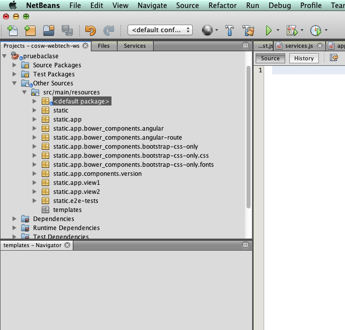

Cree un proyecto base de Sprint Boot basado en Maven, que incluya dentro de sus dependencias los elementos Web (SpringMVC, Servidor Web embebido, etc). Para esto, seleccione el 'starter' Web:

Genere el proyecto, descárguelo y descomprímalo.
Para permitir que la actualización automática del contenido Web, se va a cambiar el servidor Web incluido por defecto en spring-boot Web starter (Tomcat) por Jetty. Para hacer esto, cabie esta dependencia:
<dependency>
<groupId>org.springframework.boot</groupId>
<artifactId>spring-boot-starter-web</artifactId>
</dependency>por:
<dependency>
<groupId>org.springframework.boot</groupId>
<artifactId>spring-boot-starter-web</artifactId>
<exclusions>
<exclusion>
<groupId>org.springframework.boot</groupId>
<artifactId>spring-boot-starter-tomcat</artifactId>
</exclusion>
</exclusions>
</dependency>
<dependency>
<groupId>org.springframework.boot</groupId>
<artifactId>spring-boot-starter-jetty</artifactId>
</dependency>En el proyecto recién generado, la ruta 'src/main/resources/static' corresponde al espacio donde se publicará el contenido Web (es decir, donde residirá la SPA). Para generar un 'adamiaje' de base, desde el directorio
src/main/resourcesClone el proyecto Angular-seed, de la siguiente manera:
git clone --depth=1 --branch=master https://github.com/angular/angular-seed.git staticRectifique que quede una estructura estándar de Angular.js en la ruta src/main/resources/static
Modifique el archivo bower.json para especificar las dependencias de javascript requeridas para la SPA. En este caso, sólo se usará angular, angular-route, y las hojas de estilo de BootStrap:
{
"name": "angular-seed",
"description": "A starter project for AngularJS",
"version": "0.0.0",
"homepage": "https://github.com/angular/angular-seed",
"license": "MIT",
"private": true,
"dependencies": {
"angular": "~1.4.0",
"angular-route": "~1.4.0",
"bootstrap-css-only": "~3.3.6"
}
}Rectifique que el archivo de configración de Bower (.bowerrc) tenga definido que las dependencias de javascript se descargarán en la ruta 'app/bower_components'.
En la ruta src/main/resources/static ejecute el comando de instalación de dependencias de bower
bower instally rectifique que las dependencias antes configuradas se hayan descargado en app/bower_components.
